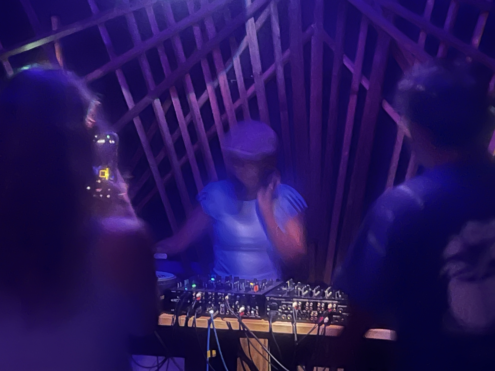

Music
Our DJ booth and sound system are made for enjoying house, techno, and other dance music.
An intimate night space in Misakicho, Ishigaki, where music brings people together. Enjoy house, techno, and other dance music through a quality sound system.

Agayha Studio is a DJ bar and cultural space in Misakicho, Ishigaki. Locals and travelers are welcome to drop in and enjoy the night.
Our DJ booth and sound system are made for enjoying house, techno, and other dance music.
Drinks are served at the bar. Please check the in-venue information or official Instagram for the current offering and event-night operation.
For private hire, filming, or an event, please contact us with your requested date and details. We will confirm availability and terms.
About a five-minute walk from Ishigaki Port Remote Island Terminal, in the Misakicho / Euglena Mall area.
Event pages list only confirmed, real events with a date, artists, and price. No upcoming event details are currently published here.
Ocean Building 3-A, 11-11 Misakicho, Ishigaki, Okinawa 907-0012, Japan.
Regular hours are daily 9 PM–1 AM. Check Instagram for irregular closures and event-hour changes.
A DJ bar and cultural space in Ishigaki, with house, techno, and other dance music.
Yes. Please check the in-venue information for that day's offering.
Yes. Both local residents and travelers are welcome.
Contact us by phone, email, Instagram, or LINE with your preferred date and details. We will confirm availability and terms.
Use the phone, email, official Instagram, or official LINE link below.